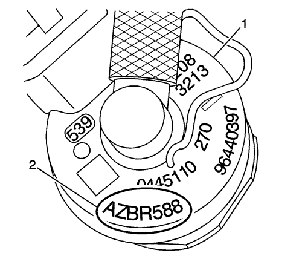

Programación del caudal de la válvula de inyección de combustible
Descripción del circuito/sistema
Las funciones de control del sistema de inyección de combustible están integradas en el módulo de control del motor (ECM). Toda la información del caudal de la válvula de inyección, los números del caudal del ajuste de la cantidad de inyección (IQA) y la posición del cilindro se almacenan en la memoria del ECM. La programación del caudal de la válvula de inyección de combustible deberá realizarse cuando se lleven a cabo alguno de los siguientes procedimientos:
| • | Se ha sustituido el ECM |
| • | Se ha sustituido una válvula de inyección de combustible |
Antes de programar el módulo de control A
Importante: NO programe un módulo de control a menos que siga un procedimiento de servicio o un boletín de servicio de General Motors LLC. La programación de un módulo de control en cualquier otro caso no corregirá de manera permanente el problema del cliente.
Asegúrese de que se cumplen las siguientes condiciones antes de programar un módulo de control:
| • | Tensión de sistema del vehículo |
| - | Que no haya ningún problema en el sistema de carga. Todo problema con el sistema de carga debe repararse antes de programar un módulo de control. |
| - | La tensión de la batería está entre 12-16 voltios. La batería debe cargarse antes de programar el módulo de control si la tensión de la misma es baja. |
| - | Que NO haya ningún cargador de batería conectado a la batería del vehículo. Un voltaje del sistema incorrecto o fluctuaciones del mismo desde un cargador de batería podría provocar un fallo de programación o daños en el módulo de control. |
| - | Apague o desconecte cualquier de los sistemas siguientes ya que podrían crear una carga en la batería del vehículo: |
| • | Luces de marcha diurna (DRL); en la mayoría de vehículos, la aplicación del freno de mano desactiva el sistema DRL. Consultar el manual del usuario. |
| • | Ventiladores de refrigeración del motor, etc. |
| • | El interruptor de encendido está situado en la posición correcta: la herramienta de diagnóstico le pedirá que conecte el encendido (ON) con el motor parado. NO modifique la posición del interruptor del encendido durante el procedimiento de programación salvo que se le indique expresamente. |
| • | Cada una de las conexiones de herramientas que aparecen a continuación son seguras: |
| - | La conexión en el conector de enlace de datos (DLC) |
| - | Los circuitos de alimentación de tensión |
| • | NO altere los mazos de cables de la herramienta mientras realiza la programación. Si se produce alguna interrupción mientras se programa, puede darse un fallo de programación o dañarse el módulo de control. |
Programación de la sustitución de la válvula de inyección de diésel (IQA) del ECM-IMA

- Encendido desconectado.
- Registre todos los códigos de IQA del cilindro correspondiente de cada válvula de inyección que se sustituya o de todas las válvulas de inyección si se sustituye el ECM.
- Desde el menú principal de diagnóstico, seleccione el sistema de programación del servicio y, a continuación, siga las instrucciones que aparecen en pantalla.
- Introduzca el código IQA de 7 dígitos (2) de la válvula o válvulas de inyección (1).
Verificación de la reparación
- Monte todos los componentes o conectores que se hayan desconectado o sustituido durante el diagnóstico.
- Realice cualquier procedimiento de ajuste, programación o configuración que haga falta al desmontar o sustituir un componente.
- Conecte el encendido durante 60 segundos.
- Encendido conectado, motor desconectado.
- Borre los DTCs.
- Si la reparación estaba relacionada con algún DTC, reproduzca las condiciones requeridas para activar el DTC y utilice los datos instantáneos/registros de averías, si procede, para verificar que el DTC no se vuelve a activar. Si se vuelve a activar el mismo DTC o lo hace otro DTC, consulte Lista de códigos de diagnóstico de avería (DTC) - Vehículo y lleve a cabo el procedimiento de diagnóstico pertinente.
O
Si la reparación estaba relacionada con algún síntoma, para verificar la reparación, reproduzca las condiciones bajo las cuales el cliente experimentó el problema. Si el problema presentado por cliente vuelve a producirse, vuelva a Síntomas - Vehículo y realice el diagnóstico de síntomas que proceda.
| © Copyright Chevrolet. All rights reserved |